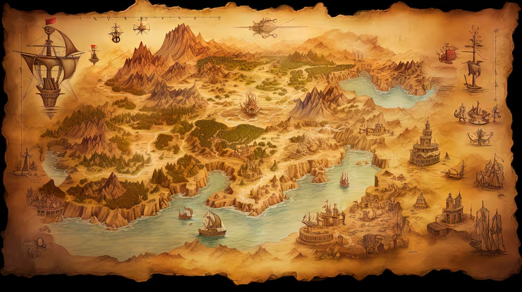

Bokiru, La Terre aux 1000 secrets

Carte des Terres Connues de Bokiru
Bienvenue à Bokiru, un monde fracturé où la magie ancienne côtoie la technologie interdite. Ici, la survie n'est pas un droit, mais une conquête. Au-delà des cités fortifiées, les terres sauvages sont dominées par des monstres titanesques, des chimères issues d'expériences ratées, et des aberrations magiques.
Mais une menace bien plus grande gronde. Depuis deux centenaires, des abominations de plus en plus puissantes émergent des ténèbres, fruits de la terrible "Malédiction Grakij". Cette corruption, source primordiale du chaos, semble invulnérable aux armées conventionnelles. Les légendes racontent que seule une équipe exceptionnelle, tissée de la diversité des peuples, pourra un jour briser le cycle et purifier Bokiru.
Les 4 Peuples Majeurs
De vieux samouraïs errants, portant le poids d'un siècle de batailles.
Une lignée au physique frêle mais à l'esprit tyranique.
Anciens bourreaux convertis aux sciences après le massacre.
Machines vivantes et pacifistes, créateurs de génie.
Les 5 Cités Légendaires
La Capitale du Savoir
Le Dojo Fantôme
La Tour Céleste
La Ruche Dorée
Le Refuge des Parias
Bestiaire des Terres Sauvages
Une abomination mi-chair mi-rouages.
Une silhouette féminine composée de vase toxique.
Une nappe de ténèbres vivante et affamée.